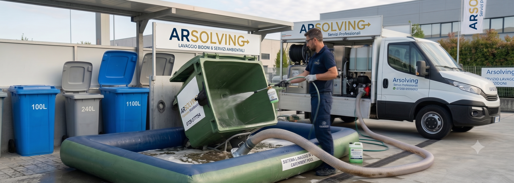

L'area rifiuti è il biglietto da visita del condominio. Igienizziamo e sanifichiamo bidoni, cassonetti e l'intera isola ecologica direttamente in loco, con un sistema a base di enzimi a ciclo chiuso: nessun residuo a terra, nessun disagio per i condomini.

Stop a odori e reclami
Gli enzimi degradano lo sporco organico e neutralizzano i batteri là dove nascono i cattivi odori. Meno lamentele in assemblea, più decoro per le parti comuni.
Zero sporco nel cortile
Sistema a ciclo chiuso: l'acqua di lavaggio viene recuperata e trattata. Niente residui su corselli, androni e aree comuni.
Nessuna gestione in più
Non serve la presenza di nessuno: basta che i bidoni siano accessibili. Al termine inviamo conferma dell'intervento all'amministratore.
Calendario programmato
Lavaggi ricorrenti settimanali, quindicinali o mensili, con procedure tracciate e prodotti biodegradabili conformi alle normative ambientali.
Condominiale / piccolo formato
Grande formato / condominiale
Lavaggio ad alta pressione + sanificazione di pavimento, pareti e contenitori
Per servizi periodici e condomini prepariamo un preventivo dedicato con tariffe agevolate.